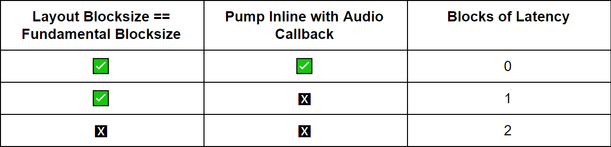

Table of Contents
- Introduction
- Overview of Integration Steps
- Including Headers and Link Libraries
- Setting Up the AWE Flash FS Instance (Optional)
- Setting Up the AWE Instance
- Setting up a Tuning Interface
- Realtime Audio
- Deferred Processing
- Standalone Operation
- AWE Core Scheduling and Priority
- Setting up a Control Interface
- Optimization
- Multiple AWE Instances
- Latency
- Troubleshooting and Common Pitfalls
Introduction
This document is meant to be a "Quick-Start" on how to integrate AWE Core. Advanced concepts are left out. Before reading this document, please see the Theory Of Operation document.
The AWE Core™ is a hardware-independent, reconfigurable audio-processing engine. The AWE Core includes over 400 audio-processing Modules, from mixers and filters to compressors and FFTs, that can be combined to easily create complex signal processing flows. The AWE Core operates by passing audio through a user-defined sequence of these Modules, as directed by Configuration-data at run-time.
Terms and Definitions
| Term | Definition |
|---|---|
| API | Application Interface |
| AWE Instance | The main AWE Core object |
| Tuning Interface | The interface by which commands/replies are transferred |
| Layout | Audio Weaver signal processing flow |
| Sub-Layout | Clock-divided section of a layout |
| AWB | Audio Weaver Binary File |
| AWD | Audio Weaver Design File |
| AWE | Audio Weaver |
| AWS | Audio Weaver Script File |
| BSP | Board Support Package |
| IPC | Inter Process Communication |
| RTOS | Realtime operating system |
| RT | Real-time |
Additional Documentation
This document will go over the basics of integrating the AWE Core. It also includes a Doxygen-generated map of all the available API Functions, Macros, Data Structures, etc. API Doc.
For a brief view of the API, see the 'AWECore_cheatsheet.pdf' in this package.
For a more detailed description of the Tuning Protocol and the various transport methods, please see the Tuning Protocol document here.
Overview of Integration Steps
Here are the basic steps to integrate AWE Core.
- Include headers and link libraries
- Define/allocate required variables
- Configure the audio IO data structures
- Initialize the API
- Setup a tuning interface
- Setup realtime audio
- Setup a control interface (optional based on product intent)
- Verify proper scheduling/priority.
Include Headers and Link Libraries
Header Files
- AWECore.h
- include's all of the required header files. Does not declare anything, only include's.
- AWEInstance.h
- AWEInstance.h contains most of the API declarations and structs required for an integration. This serves as the central API document.
- TargetProcessor.h, and the Target-specific header file
- For instance, on an M7 DSPC will provide the file “ARM_CortexM7_TargetProcessor.h”.
- StandardDefs.h
- Defines the AWE Core audio types
- Errors.h
- When doing error checking on API calls, negative return values correspond to an error. The error can be determined by using the definitions in Errors.h.
- ModuleList.h
- Every AWE Core deliverable contains a default ModuleList.h (in the SampleApp/[Target name]/Source folder) that includes a list of all the available modules. This file can be modified to account for custom modules, or modules that are not required for the target application.
Required Libraries
- AWECore
- This is the main AWE Core library.
- The exact name and extension will vary from platform to platform, but will always have the basename "awecore".
Helper Code / Optional
- AWECoreUtils (AWECoreUtils.c/AWECoreUtils.h)
- AWECoreUtils contains various helper code including SPI/UART helper functions, a Multi-instance reply table generator, and a CRC computer for preparing custom replies to AWE Server. AWECoreUtils.h API Doc
- ProxyIDs.h
- ProxyIDs.h contains a list of all the AWE Core tuning commands. ProxyIDs.h
- Additional Module Pack Libraries
- Additional module pack libraries can be linked in (VUI modules, 3rd party custom modules, etc).
Setting up the AWE Flash FS Instance (Optional)
Declaring the Required Variables
A number of variables must be defined before configuring/initializing the AWE Flash File System (FS) Instance. FlashFSInstance.h
- The AWEFlashFSInstance object encapsulates a single AWE Flash File System instance. It must be defined so it doesn't go out of scope, for example as static or global, and be initialized to zeros.
//declare and initialize to zeros AWEFlashFSInstance g_AWEFlashFSInstance = {0}; - Define the following macros for flash memory size in bytes, erasable block (or segment) size and the start offset for the Flash File System. Make sure the start offset does not overlap with other data in the Flash device, like application loader file etc. It’s recommended to use the available free space in the flash from the end. Following are the example macros of a 64MB flash device.
// Specify flash memory available for flash file system #define FLASH_MEMORY_SIZE_IN_BYTES 0x4000000 #define ERASEABLE_SECTOR_SIZE 0x10000 // 704KB from the beginning is for application loader file #define FILE_SYSTEM_START_OFFSET 0xB0000 #define SECTOR_ERASE_TIME_MS 400
Later, in the initialization section, it will become clear that there are several fields of the AWEFlashFSInstance structure that must be configured before it can be used.
Defining the Required Callbacks
AWE Flash File System requires callbacks they must be defined before initializing the AWE Flash FS Instance.
- Init callback to handle any flash device specific configuration. This is called during initialization time (awe_init) and every time Erase Flash is triggered. Following is a sample 'init' callback.
///----------------------------------------------------------------------------- /// @name BOOL usrInitFlashFileSystem(void) /// @brief Callback to initialize Flash device /// /// @retval TRUE - Initialization is success /// @retval FALSE - Initialization failed ///----------------------------------------------------------------------------- BOOL usrInitFlashFileSystem(void) { // Implement any flash specific initializations // Return FALSE up on failure return 1; } // End usrInitFlashFileSystem - Read callback to fetch requested words from the flash. Following is a sample 'Read' callback.
///----------------------------------------------------------------------------- /// @name BOOL usrReadFlashMemory(UINT32 nAddress, UINT32 * pBuffer, UINT32 nDWordsToRead) /// @brief Read 4-byte words from flash memory /// /// @param[in] UINT32 nAddress - address in flash to start reading /// @param[in] UINT32 *pBuffer - buffer to read into /// @param[in] UINT32 nDWordsToRead - number of 4-bytes elements to read /// /// @retval TRUE - read succeeded /// @retval FALSE - read failed ///----------------------------------------------------------------------------- BOOL usrReadFlashMemory(UINT32 nAddress, UINT32 * pBuffer, UINT32 nDWordsToRead) { // Check for the count zero and skip remaining if(nDWordsToRead == 0) { return 1; } // Flash specific read implementation // Return FALSE up on failure return 1; } // End usrReadFlashMemory - Write callback to write requested words on to the flash. Following is a sample 'Write' callback.
///----------------------------------------------------------------------------- /// @name BOOL usrWriteFlashMemory(UINT32 nAddress, UINT32 * pBuffer, UINT32 nDWordsToWrite) /// @brief Write 4-byte words to flash memory /// /// @param[in] UINT32 nAddress - address in flash to start writing /// @param[in] UINT32 * pBuffer - buffer to write into /// @param[in] UINT32 nDWordsToWrite - number of 4-bytes elements to write /// /// @retval TRUE - write succeeded /// @retval FALSE - write failed ///----------------------------------------------------------------------------- BOOL usrWriteFlashMemory(UINT32 nAddress, UINT32 * pBuffer, UINT32 nDWordsToWrite) { // Check for the count zero and skip remaining if(nDWordsToWrite == 0) { return 1; } // Flash device write specific implementation // Return FALSE up on failure return 1; } // End usrWriteFlashMemory - Erase callback to erase flash sectors. Following is a sample 'Erase' callback.
///----------------------------------------------------------------------------- /// @name BOOL usrEraseFlashSector(UINT32 nStartingAddress, UINT32 nNumberOfSectors) /// @brief Erase flash memory starting at address for number of sectors /// /// @param[in] UINT32 nStartingAddress - address in flash to start erasing /// @param[in] UINT32 nNumberOfSectors - number of flash memory sectors to erase /// /// @retval TRUE - erase succeeded /// @retval FALSE - erase failed ///----------------------------------------------------------------------------- BOOL usrEraseFlashSector(UINT32 nStartingAddress, UINT32 nNumberOfSectors) { UINT32 nSectorAddress, index; nSectorAddress = nStartingAddress; // Loop through number of sectors and erase each sector for (index = 0; index < nNumberOfSectors; index++) { // Flash device specific sector erase implementation // with sector start address 'nSectorAddress' // Return FALSE up on failure // Go to next sector start address nSectorAddress += ERASEABLE_SECTOR_SIZE; } return 1; } // End usrEraseFlashMemorySectorConfiguring the AWE Flash FS Instance
Now that the required variables have been declared, the AWE Flash FS Instance will be configured by assigning its members and pointers.
First, ensure that the AWEFlashFSInstance is initialized to zeros. If not, explicitly initialize to 0 with memset.
memset(&g_AWEFlashFSInstance, 0, sizeof(AWEFlashFSInstance) );
- Initialize the callback pointers of ‘cbInit’, ‘cbEraseSector’, ‘cbFlashWrite’ and ‘cbFlashRead’ in the AWE Flash FS Instance.
g_AWEFlashFSInstance.cbInit = &usrInitFlashFileSystem; g_AWEFlashFSInstance.cbEraseSector = &usrEraseFlashMemorySector; g_AWEFlashFSInstance.cbFlashWrite = &usrWriteFlashMemory; g_AWEFlashFSInstance.cbFlashRead = &usrReadFlashMemory;
- Initialize the flash specific settings of flash size in bytes, erasable block or sector size, start offset and block or sector erase time.
g_AWEFlashFSInstance.flashSizeInBytes = FLASH_MEMORY_SIZE_IN_BYTES; g_AWEFlashFSInstance.flashErasableBlockSizeInBytes = ERASEABLE_SECTOR_SIZE; g_AWEFlashFSInstance.flashStartOffsetInBytes = FILE_SYSTEM_START_OFFSET; g_AWEFlashFSInstance.flashEraseTimeInMs = (INT32)((FLOAT32)((( (FLASH_MEMORY_SIZE_IN_BYTES - FILE_SYSTEM_START_OFFSET)/ ERASEABLE_SECTOR_SIZE)*SECTOR_ERASE_TIME_MS/1000) + 0.5f) + 5);
Initializing the AWE Flash FS Instance
Next, initialize the AWE Flash FS Instance by calling the awe_initFlashFS() function. **This must happen before calling awe_init().** If awe_initFlashFS() is called after awe_init, the initialization will fail.
awe_initFlashFS(&g_AWEInstance, &g_AWEFlashFSInstance);
- Assign pFlashFileSystem in AWE Instance to AWE Flash FS instance.
g_AWEInstance.pFlashFileSystem = &g_AWEFlashFSInstance;
- Initialize the callback pointers of ‘cbInit’, ‘cbEraseSector’, ‘cbFlashWrite’ and ‘cbFlashRead’ in the AWE Flash FS Instance.
The code above will initialize the AWE Flash FS Instance.
Setting up the AWE Instance
Declaring the Required Variables
A number of variables must be defined before configuring/initializing the AWE Instance.
- The AWEInstance object encapsulates a single AWE Core instance. Most API calls take an AWEInstance as the first argument. It must be defined so it doesn't go out of scope, for example as static or global, and be initialized to zeros.
//declare and initialize to zeros AWEInstance g_AWEInstance = {0};Later, in the initialization section, it will become clear that there are several fields of the AWEInstance structure that must be configured before it can be used to process audio data. - The IOPinDescriptor objects describe input and output data buffers and their properties. They must be defined so they don't go out of scope, for example as static. NOTE: multiple IO pins not supported. There can only be one input pin and one output pin. All API's that take the argument "pinIdx" will always pass in 0.
static IOPinDescriptor aweInputPin; static IOPinDescriptor aweOutputPin;
- A module descriptor table that contains an array of pointers to modules that are available to the AWE Instance. The table is initialized at compile time. It must be defined so they don't go out of scope, for example as static.
//The list of class objects is defined in ModuleList.h const void* g_module_descriptor_table[] = { LISTOFCLASSOBJECTS}; - Memory heaps that the AWE Core uses for its own local processing. The integrator must provide word-aligned blocks of memory that are persistent. For example,
UINT32 g_FastHeapA[FAST_HEAP_A_SIZE]; UINT32 g_FastHeapB[FAST_HEAP_B_SIZE]; UINT32 g_SlowHeap[SLOW_HEAP_SIZE];
where FAST_HEAP_A_SIZE, FAST_HEAP_B_SIZE, and SLOW_HEAP_SIZE are chosen appropriately for the system. See the Optimization section for more details. - A command packet buffer of type UINT32[264] that is the destination of tuning commands.
#define PACKET_BUFFER_SIZE 264 UINT32 AWE_Packet_Buffer[PACKET_BUFFER_SIZE];
- A reply packet buffer of type UINT32[264] where the AWE Core places replies to tuning commands.
UINT32 AWE_Packet_Buffer_Reply[PACKET_BUFFER_SIZE];
Note: The standard packet size is 264. If a different packet size is needed, please contact DSPC Engineering.
Configuring the AWE Instance
Now that the required variables have been declared, the AWE Instance will be configured by assigning its members and pointers.
- First, ensure that the AWEInstance is initialized to zeros.
- Assign the instanceID to 0.
g_AWEInstance.instanceId = 0;
- Assign the AWEInstance’s “pInputPin” and “pOutputPin” pointers to the input and output pin descriptors.
g_AWEInstance.pInputPin = &aweInputPin; g_AWEInstance.pOutputPin = &aweOutputPin;
- Assign the AWEInstance’s “pPacketBuffer” pointer to the command buffer that was declared above.
g_AWEInstance.pPacketBuffer = AWE_Packet_Buffer;
- Assign the AWEInstance’s “pReplyBuffer” pointer to the reply buffer. (Note that this can be assigned to the same buffer as the send buffer if a single buffer for send/reply is desired.)
g_AWEInstance.pReplyBuffer = AWE_Packet_Buffer_Reply;
- Assign the AWEInstance’s “packetBufferSize” member to 264.
#define PACKET_BUFFER_SIZE 264 g_AWEInstance.packetBufferSize = PACKET_BUFFER_SIZE;
- Assign the “moduleDescriptorTable” pointer to the module descriptor table.
g_AWEInstance.pModuleDescriptorTable = g_module_descriptor_table;
- Assign the “numModules” member to the number of modules. This can be determined by taking the sizeof the module descriptor table and dividing it by the sizeof the first element of the module descriptor table.
UINT32 module_descriptor_table_size = sizeof(g_module_descriptor_table) / sizeof(g_module_descriptor_table[0]); g_AWEInstance.numModules = module_descriptor_table_size;
- Assign the “numThreads” to the number of audio processing threads. See the Multi-Rate section for more info.
g_AWEInstance.numThreads = 2; //dual threaded, supports two blocksizes
- Assign the “sampleRate” member to the fundamental sample rate of the system.
g_AWEInstance.sampleRate = 48000.0f;
- Assign the “fundamentalBlockSize” member to the fundamental block size of the system. This is typically the DMA block size. Every layout that is run on the system must have a block size that is a multiple of this fundamental block size.
#define AWE_BLOCK_SIZE 32 g_AWEInstance.fundamentalBlockSize = AWE_BLOCK_SIZE;
- Assign the “pFlashFileSystem” member to 0 unless an Audio Weaver Flash File System will be implemented.
g_AWEInstance.pFlashFileSystem = 0;
- Assign the “fastHeapASize”, “slowHeapSize” and “fastHeapBSize” members to the heap sizes.
g_AWEInstance.fastHeapASize = FAST_HEAP_A_SIZE; g_AWEInstance.fastHeapBSize = FAST_HEAP_B_SIZE; g_AWEInstance.slowHeapSize = SLOW_HEAP_SIZE;
- Assign the “pFastHeapA”, “pSlowHeap” and “pFastHeapB” pointers to the heaps that were previously allocated.
g_AWEInstance.pFastHeapA = g_FastHeapA; g_AWEInstance.pFastHeapB = g_FastHeapB; g_AWEInstance.pSlowHeap = g_SlowHeap;
- Assign the “coreSpeed” and “profileSpeed” members to the CPU/profiling speed of the system. Only used for profiling displays in Audio Weaver tools.
g_AWEInstance.coreSpeed = 10e6f; g_AWEInstance.profileSpeed = 10e6f;
- Assign the “name”, this will be displayed in the AWE Server dialog as the name of the instance. Max length of 8 characters.
g_AWEInstance.pName = “mytarget”;
- Assign the "userVersion" member to be a UINT32 value. The value and meaning is entirely up to the integrator.
//this example represents a date g_AWEInstance.userVersion = (UINT32) 06212019;
- Assign callback pointers "cbAudioStart", "cbAudioStop". These are optional callbacks and user can define in the BSP to be notified by the AWE Core framework when the layout Design started or stoped.
g_AWEInstance.cbAudioStart = &usrCallbackAudioStart; g_AWEInstance.cbAudioStop = &usrCallbackAudioStop; ///----------------------------------------------------------------------------- /// METHOD: INT32 usrCallbackAudioStart(AWEInstance *pAWE) /// PURPOSE: Start audio processing callback ///----------------------------------------------------------------------------- INT32 usrCallbackAudioStart(AWEInstance *pAWE) { // Target specific configurations, if any, before starting the layout pump. // Like enabling audio IO interrupts etc. return 0; } // End usrCallbackAudioStart ///----------------------------------------------------------------------------- /// METHOD: INT32 usrCallbackAudioStop(AWEInstance *pAWE) /// PURPOSE: Stop audio processing callback ///----------------------------------------------------------------------------- INT32 usrCallbackAudioStop(AWEInstance *pAWE) { // Target specific configurations, if any, before destroying the layout. return 0; } // End usrCallbackAudioStop - Assign callback pointer "cbCacheInvalidate". This is an optional callback, when defined, called from multiple places to invalidate cache. The FFSWrapper modules, IPCBuffer module, and the Multi Instance functionality in AWE Core all utilize this callback. It is the users responsibility to check if the provided address and length to be invalidated are in the cached region to avoid unnecessary overhead. Please note that this function called per block in some cases.
g_AWEInstance.cbCacheInvalidate = &usrCallbackCacheInvalidate; ///---------------------------------------------------------------------------- /// METHOD: usrCallbackCacheInvalidate /// PURPOSE: Invalidate cache region ///---------------------------------------------------------------------------- INT32 usrCallbackCacheInvalidate(AWEInstance *pAWE, void* pStartAddr, UINT32 lengthInWords) { // Target specific cache invalidation logic. // Validate input argument pStartAddr. If it falls in the cached region then invalidate cache region with start address pStartAddr and end address (pStartAddr+length-1). return 0; } // End usrCallbackCacheInvalidateInitializing the IO Pins
The next step is to first initialize the IO Pins followed by initializing the AWE Instance using specific API functions.
Initializing the IO Pins
Simply call the awe_initPin() function and pass it the input pin, the desired channel count (determined by audio HW), and an optional pin name.
define TWO_CHANNELS 2 int ret = awe_initPin(&aweInputPin, TWO_CHANNELS, NULL);
The code above would initialize the input pin with 2 channels, and the default name.
Initializing the output pin is the same as the input pin, but the output pin is passed in.
#define SIX_CHANNELS 6 int ret = awe_initPin(&aweOutputPin, SIX_CHANNELS, "outpin");
The code above would initialize the output pin with 6 channels with the name "outpin".
NOTE: multiple IO pins not supported. There can only be one input pin and one output pin. All API's that take the argument "pinIdx" will always pass in 0.
Initializing the AWE Instance
Next, initialize the AWE Instance by calling the awe_init() function. This must happen as the last initialization step. If awe_init() is called before the AWE Instance structure is configured or before the IO pins are initialized, the initialization will fail.
int ret = awe_init(&g_AWEInstance);
The code above will initialize the AWE Instance.
Setting up a Tuning Interface
The next step is to implement a tuning interface – arguably the most important component of a successful AWE Core integration as it provides essential debugging capabilities. The tuning interface communicates commands/replies to and from the AWE Instance. For example, these commands can instantiate a layout, or set and query the value of a module parameter.
Different platforms will support different transport protocols for the tuning interface. AWE Server supports USB, TCP/IP (sockets), RS232, SPI, etc. Helper code is available to aid in the development of these different transport layers on the target. It is the responsibility of the integrator to enable the transport protocol for the tuning commands to be passed to and from the platform.
Here are the basic steps for setting up and using a tuning interface with AWE Server.
- Setup/test the desired transport layer between the board and the PC. Make sure that packets of length 264 words can be passed back and forth (echo). The protocol can be verified completely independently of AWE Core using some kind of simple application.
- Once data can be passed, the tuning interface should be setup to receive commands from AWE Server. This process varies from protocol to protocol.
- Once commands are received from AWE Server, they will need to be processed by the AWE Instance using awe_packetProcess(). Once a command is received from AWE Server, copy it into the
AWE_Packet_Bufferand then callawe_packetProcess(&g_AWEInstance)on the instance. Remember that this packet buffer has been registered with the AWE Instance, which is why theawe_packetProcess(&g_AWEInstance)function does not need to take an argument to the packet buffer. - The awe_packetProcess() function will process the packet, and then generate a reply in the
AWEInstance.pReplyBuffer. If the same buffer is used for both send and reply, the reply message will overwrite the original command. - Finally, the reply is sent back to the AWE Server over the transport layer. See the following pseudocode representation of the complete transaction.
int sizeOfPacket = 264; readPacket(&AWE_Packet_Buffer, sizeOfPacket); awe_packetProcess(&g_AWEInstance); writePacket(&AWE_Packet_Buffer_Reply, sizeOfPacket);
Real-time Audio
RT Audio Introduction
The next step is to integrate real-time audio. AWE Core aside, real-time audio can be a tricky topic. Before attempting to integrate real-time audio into an AWE Core system, please ensure that the integrator has a basic understanding of digital audio and real-time audio processing. Here are some helpful links.
http://www.rossbencina.com/code
Giulio Moro - Assessing the stability of audio code for real time low latency embedded processing
RealTime Audio Integration Steps
- Verifying Audio HW IO with a Passthrough Ensure that audio can be cleanly passed between input/output without the AWE Core involved in the signal path. A simple sine wave input into the system can often be the best audio source for this type of test, as any distortion or dropouts are more easily audible than with a more complex signal. This step is critical to ensure a high fidelity audio system, and can vary greatly from platform to platform. For instance, an embedded target might utilize the HW’s audio IO DMA, while Linux systems may use ALSA or something similar.
- Determining Audio HW Settings and Configuring the AWE Instance. These steps will describe how to set up the AWE Instance for RT Audio support.
- Configure the sample rate and block size. For example, if the audio HW reads in samples at a block size of 32, then the AWE Instance’s fundamental blockSize should be set to 32. The block size of any layout loaded on the target must be a multiple of this fundamental block size. If the HW’s sampling rate is 44100.0, then the AWE Instance’s sampleRate should be set to 44100.0.
- Determine the sample format of the audio HW. See the Audio Sample Formatting section below for more information on audio sample formatting.
- Determine the Input/Output channel count of the audio HW. AWE Core needs to be able to import/export data for each available HW channel. For each available hardware input channel, the application will need to call awe_audioImportSamples(), and, likewise, awe_audioExportSamples() will need to be called for each available hardware output channel. Using these channel-by-channel functions make it easy to aggregate multiple audio sources into a single, multi-channel input or output. Additionally, the Import and Export functions automatically handle what is referred to as 'channel matching'. Since AWE Core is designed to be flexible and Audio Weaver layouts are designed to be portable, the number of channels in a layout need not match the number of HW inputs and outputs in a system. If a layout has more I/O channels than the hardware channel count, then the Import and Export functions will automatically fill the input signal with additional zero'd channels, and will ignore any additional output channels. Similarly, if the layout loaded has fewer channels than the hardware channel count, then the Import and Export functions will ignore the additional HW input channels, and fill the additional HW output channels with zeros.
- The Realtime Audio Loop. These steps describe what should happen inside the audio loop after configuration is complete.
- In the audio loop, check to see that a valid layout is loaded and that audio has been started with the API calls awe_layoutIsValid() and awe_audioIsStarted().
- Call awe_audioImportSamples() for each input channel and pass in the audio data from the audio HW.
- Get the “layoutMask” from the awe_audioGetPumpMask() function. This will return a bit vector of the audio processing layouts that need to be pumped. The number of audio layouts to pump is determined by the number of clock-dividers (bufferup/down paths) in the .awb. The layoutMask bit vector should be bitwise AND'ed (&) with
1 << N, for N=0:numThreads-1, to determine which layouts are ready to be pumped. Based on the system's capabilities, each layout should be pumped at it's own interrupt level/thread priority. See the Multi-Rate section for more information. - Call awe_audioPump() for each layout as determined by the layoutMask above. The layout index will be the value of N from above.
- Call awe_audioExportSamples() for each output channel and pass in the audio HW’s output data.
- Repeat.
Audio Sample Formatting
The data type of the input and output audio data is determined by the audio hardware. Typically, digital audio is represented as fixed point data in 16, 24, or 32 bit depth. The audio sample formats supported by AWE Core's awe_audioImportSamples() and awe_audioExportSamples() functions, as defined in SampleType in StandardDefs.h, are:
- Sample16bit - Fixed point 16 bit audio data stored in 16 bit data type. Also known as Q15 format.
- Sample24bit_low - Fixed point 24 bit audio stored in 32 bit data type. Right justified, so the 24 bits of data are stored in the lowest 24 bits of the 32 bit word.
- Sample24bit_high - Fixed point 24 bit audio stored in 32 bit data type. Left justified, so the 24 bits of data are stored in the highest 24 bits of the 32 bit word. If both right justified and left justified formatting is available on the hardware, then choose left justified (Sample24bit_high) for a slight performance improvement.
- Sample32bit - Fixed point 32 bit audio data. Also known as Q31 format. This data is passed directly to the signal processing chain without conversion.
Internally, all inputs and outputs to Audio Weaver layouts are of type Sample32bit, also referred to as fract32 within a layout. This is done to guarantee portability of any signal processing layout to any target system, regardless of the hardware's native audio data type. The awe_audioImportSamples() and awe_audioExportSamples() functions will convert to and from the Sample32bit data as needed based on the integrator's supplied _SampleType argument. If the target's native audio sample formatting is not one of those listed above, then the integrator will have to manually convert the data to one of the supported types before using the import and export functions.
Since some common target systems natively support floating point audio, helper functions are provided to convert between float<-->fract32 in AWECoreUtils.c, which is provided in the AWE Core package. Add AWECoreUtils.c to the build project to access the sample-by-sample conversion functions float_to_fract32 and fract32_to_float. See the API in doc AWECoreUtils.h for more info.
Multi-Rate Processing
The AWE Core allows audio to be processed at multiple block rates. For example, consider a system with two processing paths: one that processes time-domain data in blocks of 32 samples and another that processes frequency-domain data in blocks of 64 samples but at 1/2 the rate of the time-domain path. Such a system is shown in the figure below. It uses BufferUp and BufferDown modules to connect the different block size domains. These modules effectively partition the layout into 2 sub-layouts operating at different block rates.

The two paths are executed at different rates and AWE Core’s awe_audioGetPumpMask() API call provides a mechanism to determine when the processing for each path should be initiated. Consider the following pseudocode:
layoutMask= awe_audioGetPumpMask(&g_AWEInstance);
if (layoutMask & 0x1) raise(AWEProcess_HiPrio);
if (layoutMask & 0x2) raise(AWEProcess_LowPrio);
AWEProcess_HiPrio()
{
awe_audioPump(&g_AWEInstance, 0); // small block size path
}
AWEProcess_LowPrio()
{
awe_audioPump(&g_AWEInstance, 1); // large block size path
}
This code tests which sub-layouts have accumulated enough data to execute. The layoutMask variable contains a 1 in each bit position corresponding to sub-layout that is ready to execute. For example, if layouts 0 and 1 are ready to execute, layoutMask would be 0x00000003.
Lower numbered sub-layouts correspond to smaller block sizes. In the pseudo-code, a signal is raised for each sub-layout that is ready to be pumped.
High Level OS Profiling on Multi Core Devices
Profiling designs on high-level OSes is challenging because layout threads may run on any available core at any given time. An OS-level mechanism to lock a particular thread to a certain core may be available. If so, one can notify AWECore that a layout thread will run on a specific core, and more accurate profiling will be shown in AWE Server. These functions are awe_fwSetLayoutCoreAffinity() and awe_fwGetLayoutCoreAffinity(). By default, all layouts are assumed to run on core 0.
Multi-Rate Scheduling
Real-time constraints dictate that if the 64 sample sub-layout is executed in the same context as the 32 sample sub-layout, both will need to complete processing before the next block of 32 samples arrives or real-time will be broken. This imposes an unnecessarily strict constraint on the 64 sample sub-layout – its processing need only be completed before the next block of 64 samples is accumulated. Thus, its processing time can, in principle, be spread over 2 of the 32 sample block times without breaking real-time. In practice, this is achieved by executing the two sub-layouts in separate contexts. The sub-layout with the shorter block size should have higher priority so that it can preempt the processing of the sub-layout with the longer block size. In this way, the real time constraints of each sub-layout can be accommodated. The following figure shows the timing for this example:

Multi-Instance Scheduling
In the multi-instance environment where instance 0 is the master with interface to audio IO peripherals, it's common to have bigger layout block size on secondary instances then the layout block size on instance 0. In this situation, it's not a good practice to signal secondary instances at the fundamental block rate. To avoid unnecessary overhead with signalling secondary instances at higher block rate, user must call awe_audioIsReadyToPumpMulti() API and if it returns TRUE then signal the secondary instance.
- If there two instances, call awe_audioIsReadyToPumpMulti() to check if the second instance is ready to pump as
if (awe_audioIsReadyToPumpMulti(&g_AWEInstance, 1)) { // Signal secondary instance to check for the pump mask, through either raise() or any other option depending on the target } - Call the above function, as many times as the slave instances (with ID > 0) and signal the corresponding instance.
- When this function is called with instance id 0 or invalid ID, it always returns FALSE.
Multi-Rate and Multi-Instance Profiling
In a multi rate processing with different priorities of each processing thread, it's quite common that the low priority thread processing is preempted by the high priority thread processing which affects the profiling of low priority thread processing due to the continuous clock counter. By default, AWE Core corrects the overhead by the high priority thread processing due to preemption. Currently the preemption overhead correction is supported on all the platforms except Windows (WIN32) and Linux.
In a system with multiple AWE Instances in the same core, user must call awe_setInstancesInfo() API to enable the preemption overhead correction in profiling. Call this API as the last step in init sequence after all AWE Instances are configured and initialized.
- Declare a global array of AWEInstance pointers with size for number of AWE Instances in a single core
AWEInstance *g_pInstances[NUM_AWE_INSTANCES];
- Initialize the array with each instance pointer
for (int i = 0; i < NUM_AWE_INSTANCES; i++) { g_pInstances[i] = &g_AWEInstance[i]; } - Call awe_setInstancesInfo() API to initialize overhead correction in the profiling
awe_setInstancesInfo(g_pInstances, NUM_AWE_INSTANCES);
Preemption Overhead Outside of the Layout
In a multi-rate or multi-instance systems, when the low priority layout processing is preempted by high priority layout processing, the profiling overhead of the high priority layout processing is corrected by default within the AWE Core framework. To include overhead due to external events like DMA ISR, call awe_audioStartPreemption() and awe_audioEndPreemption as explained below.
- DMA ISR without low latency audio pump:
DMA ISR() { UINT32 start_time; INT32 coreAffinity = 0; // For embedded targets, default core affinity is 0 in AWE Core. // For other targets like Linux based, get the core affinity from which this function is called. // Call the start preemption API to get the start time stamp start_time = awe_audioStartPreemption(&g_AWEInstance, coreAffinity); // All the audio import calls here // All the audio export calls here // Get pump mask and other code // Call the end preemption API to include this ISR overhead in any low priority active layout(s) awe_audioEndPreemption(&g_AWEInstance, start_time, coreAffinity); }
DMA ISR with low latency audio pump:
DMA ISR()
{
UINT32 start_time;
INT32 coreAffinity = 0;
// For embedded targets, default core affinity is 0 in AWE Core.
// For other targets like Linux based, get the core affinity from which this function is called.
// Call the start preemption API to get the start time stamp
start_time = awe_audioStartPreemption(&g_AWEInstance, coreAffinity);
// All the audio import calls here
// Get pump mask and other code
// Call the end preemption API to include overhead by import calls in any low priority active layout(s)
awe_audioEndPreemption(&g_AWEInstance, start_time, coreAffinity);
// Call the low latency audio pump. Overhead due to this pump call in any low priority active layout(s) is corrected by the AWE Core framework
awe_audioPump(&g_AWEInstance, 0);
// Call the start preemption API to get the start time stamp, after low latency pump call to include overhead due to export calls
start_time = awe_audioStartPreemption(&g_AWEInstance, coreAffinity);
// All the audio export calls here
// Call the end preemption API to include overhead by export calls in any low priority active layout(s)
awe_audioEndPreemption(&g_AWEInstance, start_time, coreAffinity);
}
- To correct overhead due to multiple external events (for example, DMA ISR and UART IST in baremetal BSP), user has to call the above methods in each event and additional handling needs to be done in one os some of the external event handling routines. Following is the example use case correcting overhead due to DMA ISR and UART ISR in typical baremetal BSP.
// Global variable which counts overhead by the high priority interrupt (UART ISR in this case) UINT32 uartOverhead = 0; DMA ISR() { UINT32 start_time; INT32 coreAffinity = 0; // For embedded targets, default core affinity is 0 in AWE Core. // For other targets like Linux based, get the core affinity from which this function is called. // Clear the high priority event overhead at the beginning uartOverhead = 0; // Call the start preemption API to get the start time stamp start_time = awe_audioStartPreemption(&g_AWEInstance, coreAffinity); // All the audio import calls here // All the audio export calls here // Get pump mask and other code // Call the end preemption API to include this ISR overhead in any low priority active layout(s) // Consider high priority event overhead if it happened from this ISR awe_audioEndPreemption(&g_AWEInstance, start_time + uartOverhead, coreAffinity); } UART ISR() { UINT32 start_time; INT32 coreAffinity = 0; // For embedded targets, default core affinity is 0 in AWE Core. // For other targets like Linux based, get the core affinity from which this function is called. // Call the start preemption API to get the start time stamp start_time = awe_audioStartPreemption(&g_AWEInstance, coreAffinity); // UART packets handling // Call the end preemption API to include this ISR overhead in any low priority active layout(s) // Accumulate the overhead for the low priority events (DMA ISR in this case) to address recursive preemptions in the same DMA block uartOverhead += awe_audioEndPreemption(&g_AWEInstance, start_time, coreAffinity); }Deferred Processing
There are certain AWE modules that need to perform time consuming calculations, for example when the cutoff frequency of a Second Order Filter module is changed, the filter coefficients need to be recalculated. Performing these calculations in the audio processing context can cause it to overrun. To address this issue, certain modules defer those calculations until the firmware calls awe_deferredSetCall().
Note: For module authors, the awe_deferredSetCall() function calls the module's Set function with a mask of 0xFFFFFF00.
An integrator can check for any required deferred processing using the return value of awe_audioPump(), which will return TRUE if any deferred processing is pending. If deferred processing is needed, then call awe_deferredSetCall() at a priority that is lower than the audio processing. awe_deferredSetCall() performs deferred processing for a single module, and returns TRUE if there is more deferred processing that is pending. Thus it should be called repeatedly until it returns FALSE.
//g_bDeferredProcessingRequired is returned by awe_audioPump()
if (g_bDeferredProcessingRequired || bMoreProcessingRequired)
{
g_bDeferredProcessingRequired = FALSE;
bMoreProcessingRequired = awe_deferredSetCall(&g_AWEInstance);
}
Standalone Operation
At this point, the integrator should be able to load a layout from Audio Weaver Designer and run it on the target via the Tuning Interface. Once a Layout in Designer has been completed, it is easy to switch to stand-alone operation. Simply ask Audio Weaver to "Generate Target Files", and the Layout's configuration-data will be generated as a C array to be compiled into the system.
Loading from an Array
From the viewpoint of AWE Core, the signal processing layout is described by a data array of binary Audio Weaver commands. This command array is generated by Audio Weaver Designer using the Tools/Generate Target Files menu item and enabling the [BaseName]_initAWB checkbox. The layout is loaded into an AWE Core instance by making a call to awe_loadAWBfromArray with the command array, its size in 32-bit words, and the AWEInstance as arguments. If an error occurs during loading, then the offset of the offending AWB command is returned to the pPos argument.
INT32 err = awe_loadAWBfromArray (&g_AWEInstance, pCommands,arraySize, &nErrOffset);
if (err)
{
// report the error
printf(“error code %u due to command at position %u\n”, err, nErrOffset);
// handle the error
...
}
awe_loadAWBfromArray() will load the entire array of commands and process them locally on the AWE Instance. If an array of commands needs to be loaded on a remote instance, it can be loaded command by command with the awe_getNextAWBCmd() helper function in AWECoreUtils.h. Each command is parsed so that they can be routed to the remote instance.
AWE Core Scheduling and Priority
All priority and interrupt issues are managed outside of the AWE Core by the firmware integrator since the AWE Core has no knowledge of the supporting processing environment it is being integrated into. The following processing context may be implemented using interrupt handlers or using OS threads/tasks. The main requirement is that the processing context is implemented at different preemptible priority levels.
A basic Audio Weaver platform has a minimum of five priority levels of processing. From highest priority to lowest priority:
- Priority 1: Tuning Communication I/O Task: Receives/sends data over the communication transport layer, for example RS232, USB, SPI, or Ethernet. Note: Tuning commands are not processed in this context; data is simply moved into and out of the tuning packet buffer. Action: Insert received data into the tuning packet buffer or send reply data from tuning packet buffer. When a complete packet has been received, signal the low priority idle task to process it.
- Priority 2: Audio I/O Task: Complete audio frame has been received. Blocks of audio samples are exchanged between DMA buffers and the AWE Core input and output buffers. Action: Copy new audio samples into AWE layout input buffers copy latest AWE layout processed audio samples to output buffers if enough audio samples are available trigger Priority 3 and/or Priority 4 tasks to perform signal processing.
- Priority 3: Audio Processing Task: Process one AWE layout-defined frame of audio samples. Action: At this priority level, the active signal processing layout is processed with awe_audioPump().
- Priority 4: Lower Priority Audio Processing (multi-rate) Task: Process one larger AWE layout-defined frame of audio samples. Action: At this priority level, longer duration signal processing is initiated with awe_audioPump() but at a lower priority than the normal audio processing above.
- Priority 5: Background Processing Task: In background / idle loop context, non-real-time tasks are processed. This includes the processing of tuning commands, deferred processing, and any Control Interface processing. Action:
- Process a received tuning command.
- Process any deferred processing needed for a single module.
- Perform any needed interaction with the layout from the firmware.
These three actions must be atomic to avoid the possibility of race conditions due to concurrent access of resources.
Setting up a Control Interface
Control Interface Overview
A control interface lets the system interact with modules in the running layout directly from the firmware. To access the layout from the API, use Designer to generate a control-interface header file for the layout. Then, use the following API calls define the functionality of the control interface:
Get/set a value of a module: awe_ctrlGetValue() and awe_ctrlSetValue()
INT32 awe_ctrlGetValue(const AWEInstance *pAWE, UINT32 handle, void *value, INT32 arrayOffset, UINT32 length) INT32 awe_ctrlSetValue(const AWEInstance *pAWE, UINT32 handle, const void *value, INT32 arrayOffset, UINT32 length)
Get/Set the status of a module (bypassed, active, inactive, muted): awe_ctrlSetStatus() and awe_ctrlGetStatus()
INT32 awe_ctrlSetStatus(const AWEInstance *pAWE, UINT32 handle, UINT32 status) INT32 awe_ctrlGetStatus(const AWEInstance *pAWE, UINT32 handle, UINT32 *status)
Check if a module exists, and if so return its ClassID: awe_ctrlGetModuleClass()
INT32 awe_ctrlGetModuleClass(const AWEInstance *pAWE, UINT32 handle, UINT32 *pClassID)
The following functions provide finer grained control over how module variables get set and are for advanced users: awe_ctrlSetValueMask() and awe_ctrlGetValueMask()
INT32 awe_ctrlSetValueMask(const AWEInstance *pAWE, UINT32 handle, const void *value, INT32 arrayOffset, UINT32 length, UINT32 mask) INT32 awe_ctrlGetValueMask(const AWEInstance *pAWE, UINT32 handle, void *value, INT32 arrayOffset, UINT32 length, UINT32 mask)
Control Interface Steps
To access a module and control it via the Control Interface,
- Create the desired layout. In the build tab of a module, assign an objectID to the module's that will be accessed. The objectID must be a value between 30000-32767.
- Generate a ControlInterface.h header file from the layout with Tools->Generate Target Files. Make sure the [BaseName]_ControlInterface.h box is checked.
- Include the generated [BaseName]_ControlInterface.h file in the AWE Core integration. This file will contain all of the define's required to use the API's control functions.
- Check if the module exists and is of the right class with awe_ctrlGetModuleClass().
- Use one of the awe_ctrl functions to set/get something about a module.
- The
handle, lengtharguments will all be defined in the [BaseName]_ControlInterface.h file that was generated. See the API Doc for details about the control functions arguments/return values.
- The
- Check the return value for errors and handle appropriately.
See the following example.
// Does the current AWE model have a SinkInt module with this control object ID?
if (awe_ctrlGetModuleClass(&g_AWEInstance, AWE_SinkInt1_value_HANDLE, &classID) == OBJECT_FOUND)
{
// Check that module assigned this object ID is of module class SinkInt
if (classID == AWE_SinkInt1_classID)
{
// SinkInt module (value is an array)
awe_ctrlGetValue(&g_AWEInstance, AWE_SinkInt1_value_HANDLE, &nValue, 0, 1);
}
}
Optimization
The AWE Core can be optimized for a system for heap space and for image size.
Heap Sizing and Placement
In a typical workflow, the integrator would decide on heap size/placement for development and finally optimized for production.
To decide on heap size/placement for board bring-up, set all three heaps to some small number of 1K word blocks say (1024 * 5). When the BSP is fully developed inspect the memory map to determine how much free space is available in the memory sections that have been assigned to the heaps. Then adjust the heap space to use as much of this memory as is practical. A typical assignment of heap might be to assign processor “tightly coupled memory” to fast heap A, processor RAM to fast heap B, and off-chip SDRAM to the slow heap.
Audio Weaver Designer can also generate the absolute smallest heap sizes needed for a specific layout via Tools->Generate Target Files and selecting [BaseName]_HeapSize.h. This can greatly reduce the memory footprint and aid in optimizing an AWE Core integration.
Module List Optimization
The ModuleList.h file that is delivered with AWE Core contains a large set of modules. This is convenient during development to provide a large selection of modules with which to design layouts. To optimize for a specific layout at production time, Audio Weaver Designer can generate a ModuleList.h with only the modules used by that layout using Tools->Generate Target Files->[BaseName]_ModuleList.h. Since most modern linkers will only link those modules referenced, this will significantly reduce the image size.
Multiple AWE Instances
Multiple AWE Instances Introduction
AWE Core target systems can contain multiple AWE Instances. This is useful on a platform with multiple cores when a system needs to do signal processing on each core, or if separate instances are needed for dedicated signal processing tasks.
AWE Core supports two methods of implementing multiple AWE Instances on a target system. Both methods support multiples AWE Instances on a single core, or across multiple cores on a single SOC.
- Multi Instance (Recommended): Depends on a 'shared heap' approach. This heap is provided by the user application and is allocated in a shared region of memory accessible to all AWE Core instances on a target. AWE Core handles all tuning packet handling and audio data routing between instances using this shared memory.
With this approach, a single layout (AWD file) is created and can be distributed across all AWE Core instances. The 'IPCBuffer' module in Designer is used to route audio between AWE Core instances and to define the target instance for the downstream modules in the layout..
Note: The Multi Instance feature is currently released as a beta feature, and may change in incompatible ways in future releases.
- Multi Canvas: Each AWE Core instance is independently connected to Designer. The user is responsible for routing tuning packets and audio to each instance using their own IPC protocol. Each AWE Core instance has its own independent layout (AWD file). This method might be preferable for those who wish to split signal processing designs among teams, and also results in smaller .awd design files.
Before setting up a multi instance tuning interface, we recommend implementing a single instance tuning interface. This will solidify the theory of operations and allow for easier understanding of the multi instance model.
AWE Core packets always contain a prefixed address called an 'instanceID'. On a single instance system, this instanceID is always 0. However, when developing a multi instance system, commands can be addressed to different instanceID's.
It is important to note that there is normally only one tuning interface between Server and the system. That single tuning interface will receive the packets for all instances and the BSP integrator must route them to the correct instance.
(Multi Instance only): The instanceID of an AWE command is determined by the instanceID of a module/wire in the design. The instanceID is a propagatable field, and can be modified using the 'IPCBuffer' module, or, for a source module, by setting the clockDivider field in the build tab of the module properties. The syntax to set the clockDivider field is <clockDivider (#)><threadThead (letter)><instanceID (#)>, so '2B3' will run the source module with clockDivider of 2, on thread B of instance 3. The 'IPCBuffer' module exists to take one or more input wires of data that exists on one instanceId, and send it to another user-specified instanceId. (Multi Canvas only): When using Designer, the instanceID of an AWE command is determined by which instance is selected in the dropdown window of Designer.
Multi Instance Guide
Utilizing multi instance AWE Core requires these steps:
- Allocate a shared heap memory space in a memory region accessible to all AWE Core instances. If this shared memory region is cached, see the cbCacheInvalidate callback function in the AWEInstance structure. Attach this shared memory space, along with its size, to each AWE Core instance using the following AWEInstance struct members:
/** The shared heap. */ volatile UINT32 *pSharedHeap; /** The shared heap size. */ UINT32 sharedHeapSize;
- Allocate the tuning packet buffer in a shared memory region accessible to all AWE Core instances. Initialize the reply buffer pointer to the same memory region as the packet buffer. (See the Single Instance Tuning Interface Section for more details)
- Provide a unique instanceId to each AWE Core instance, with instanceId 0 reserved for the AWE Core instance that is the primary audio processing instance. The primary audio processing instance is the one that interacts with the audio input and output devices, and is the only instance that should call awe_initPin(). The instanceId numbering scheme follows a linearly incrementing digit starting from 0 (e.g. 0, 1, 2, 3...). Note that if there is a tuning only instance that does no audio processing and only forwards packets to processing instances, then both the tuning only instance and the primary audio processing instance must have instanceId equal to 0. This tuning only instance must be initialized with awe_init for awe_loadAWB* API's to function correctly.
- Set the numProcessingInstances member of each AWE Core instance to the total number of AWE Core instances on the target system. For example, if the target system has two AWE Core instances (instanceId: 0 and instanceId: 1), then the numProcessingInstances member of each AWE Core instance should be set to 2. Tuning only instances do not contribute to this number.
/** The number of audio processing instances of AWECore configured on a single target */ UINT32 numProcessingInstances;
- Using a global software interrupt accessible to all AWE Core instances, trigger each instance to check their pump mask and pump. This trigger is required to be synchronous to the audio peripheral data passed in/out of AWE Core instance 0. (See RealTime Audio Integration Steps for more details on mask reading and pumping audio)
- Process packet buffer data using the multi instance packet process API awe_packetProcessMulti(). For the tuning master instance, the API is called once a complete packet is received. For non-tuning instances, the API is polled in a low-priority task.
For more details on how to implement multi instance AWE Core, including pseudocode related to all necessary implementation details, read the Multi-Instance AWE Core Integration Guide found at (https://documentation.dspconcepts.com/awe-designer/latest-version/application-notes), or see the example file LinuxAppMulti.c.
Multi Canvas Guide
Multi Canvas Tuning Interface Setup
Basic Overview of Multi Canvas Integration Steps
Integrating a multi canvas AWE Core system can be broken into the following basic steps. This assumes that the integrator is able to implement a single instance tuning interface.
- Setup and initialize the multiple AWE Instances with appropriate instanceID’s.
- Setup a tuning interface and tell Server how many instances there are. Do this by generating a reply to the PFID_GetCores2 AWE command sent from AWE Server.
- Route the packets to the correct instance based on the packet’s instanceID prefix.
- Send the replies back to Server.
Detailed Multi-Canvas Integration Steps
- Allocate/initialize the multiple AWE Instances with their instanceIDs. The instanceID is stored in the high order 4 bits of an 8 bit word. Therefore the first instance must always be 0, and the following cores will increment by 16. IMPORTANT: InstanceID’s should always increment by 16. So the instanceID’s for a 2 instance system would be 0, 16. For a 3 instance system, 0, 16, 32. Etc...
- Declare an instance table array as a UINT32[numInstances], where the elements are the instanceID’s of the AWE instance’s that were just initialized.
//the following instance table represents a two-instance system. UINT32 numInstances = 2; UINT32 instanceIDs[numInstances] = { 0, 16 }; - Implement a tuning interface to pass AWE commands between AWE Server and the target (See the Single Instance Tuning Interface Section).
- When multi canvas is to be supported, the BSP author will setup the tuning interface to listen for the AWE Command “PFID_GetCores2” (use the PACKET_OPCODE macro and the enum in ProxyIDs.h to determine this command). When this command is received, use the GenerateInstanceTableReply function in AWECoreUtils to generate a reply to the PFID_GetCores2 command. Send the instance table reply back to the Server over the tuning interface. Now AWE Server knows how many instances there are in the system, and can create a dropdown list of the instances in AWE Server and Designer.
if (opcode == PFID_GetCores2)
{
GenerateInstanceTableReply(AWE_Packet_Buffer_Reply, numInstances, instanceIDs);
writePacketToServer(AWE_Packet_Buffer_Reply);
}
- Implement a packet router. The tuning interface must be able to send/receive packets from all instances. The packet router will take a packet from the Server, strip off its instanceID (use the macro PACKET_INSTANCEID), and then route the command to the appropriate instance.
Multi Canvas Pseudocode Examples
The following pseudocode example is for a chip with two signal processing AWE Instances with the first AWE Instance providing the tuning interface.
TuningInterface()
{
AWE_Packet_Buffer = receivePacketFromServer();
if (PACKET_OPCODE(AWE_PACKET_BUFFER) == PFID_GetCores2)
{
*AWE_Packet_Buffer = *GenerateInstanceTableReply(AWE_Packet_Buffer, numInstances, instanceIDs);
writePacketToServer(AWE_Packet_Buffer);
}
else if (PACKET_INSTANCEID(AWE_Packet_Buffer) == 0)
{
awe_packetProcess(&AWEInstance0);
writeReplyToServer();
}
else if (PACKET_INSTANCEID(AWE_Packet_Buffer) == 16)
{
sendToInstance16();
//command is processed on instance 16
readReplyFromInstance16();
writeReplyToServer();
}
}
Below is a pseudocode example of a multi-canvas tuning interface that is implemented on an MCU that has no knowledge of the AWE Core instances. The system has two AWE instances on separate processors, with IDs of 0 and 16.
TuningInterface()
{
Tuning_PacketBuffer= receivePacketFromServer();
if (PACKET_OPCODE(Tuning_PacketBuffer) == PFID_GetCores2)
{
GenerateInstanceTableReply(Tuning_PacketBuffer, numInstances, instanceIDs);
writePacketToServer(Tuning_PacketBuffer);
}
else if (PACKET_INSTANCEID(Tuning_PacketBuffer) == 0)
{
sendPacketToInstance0(Tuning_PacketBuffer);
//Instance 1 gets packet and calls awe_packetProcess
receiveReplyPacketFromInstance0();
writeReplyToServer();
}
else if (PACKET_INSTANCEID(AWE_Packet_Buffer) == 16)
{
sendPacketToInstance16();
//Instance 16 gets packet and calls awe_packetProcess
receivePacketFromInstance16();
writeReplyToServer();
}
}
Latency
Overview of Latency in AWE Core
This section discusses only the latency caused by the AWE Core framework. The signal processing flow, the firmware, and the hardware can all introduce additional latency to the overall system. In this discussion, a "block" of latency refers to the layout block size and the systems sample rate. For example, with a layout block size of 256 and a sample rate of 48 kHz, the latency through the AWE Core system will be in multiples of blocks of (256 / 48000) = 5.33 ms. AWECore can introduce up to 2 block’s of latency, but can also be configured to achieve 0 blocks of latency under certain conditions.
There are 3 possible latency situations introduced by the AWECore library
- 2 blocks of latency
- 1 block of latency
- 0 blocks of latency
Which of the three latency paths will be taken depends on some conditions in the implementation of the AWECore API, and the relationship between the system and the signal processing layout.
Note: The following abbreviations may be used for these AWECore API calls:
- awe_audioImportSamples = Import
- awe_audioPump = Pump
- awe_audioExportSamples = Export
Conditions that Impact Latency
To achieve 0 blocks of AWE-induced latency, the following three conditions must be met:
- Equivalent Block Sizes: The loaded layout’s blocksize must be equivalent to the AWECore instance’s fundamental blocksize.
- Order of audio API calls: The order of AWECore audio processing API calls in the BSP’s audio callback must be import -> pump -> export, as in the following: awe_audioImportSamples() -> awe_audioGetPumpMask() && awe_audioPump() -> awe_audioExportSamples
- awe_audioPump() Inline with DMA callback: The awe_audioPump() API for layout index 0 must be called inline with the BSP’s audio callback, as opposed to signaling another thread or raising an interrupt.

Equivalent Block Sizes – Double Buffering
AWE Core has an internal double buffering scheme on the input and output pins to handle situations where a layout’s blocksize is a multiple of the AWEInstance’s fundamental blocksize. For example, a system with a 64 BS layout running on a 32 fundamental BS AWEInstance must complete two, 32-sample audio callbacks before actually pumping audio through the layout (to satisfy the 64 samples). Double buffering is used in this situation in order to store the next frames of data in one buffer, while the processing occurs on the data in the other buffer. Two blocks of latency are introduced by this double buffering of the input and output pins.
However, in a situation where a layout BS is the same as a fundamental BS, the double buffering scheme is not required and two blocks of latency can be avoided. AWECore has an internal mechanism to check if the layout and fundamental blocksizes are equivalent at layout runtime, and will automatically bypass the double buffering to eliminate the introduced latency. Less memory is also consumed under this condition as only a single buffer can be used at the input and output pins.
Order of AWECore API Calls – Import Pump Export
At a very high level, 0 blocks of latency can only fundamentally be achieved if all of the audio processing occurs in a single callback. Based on this, the audio processing function must implement the following order of API calls to achieve the lowest possible latency: awe_audioImportSamples() awe_audioGetPumpMask() && awe_audioPump() (can be a signal to lower priority threads to do actual pumping) awe_audioExportSamples()
Different orders of API calls will still operate correctly from a processing standpoint, but may not achieve the lowest possible latency.
Pump Inline with Callback – Pump Context
Virtually all systems that integrate the AWE Core will use a thread signaling or interrupt raising scheme to trigger awe_audioPump in separate, lower priority contexts from the main DMA audio callback. While this scheme is required in order to allow for efficient, multi-rate operation of signal processing layouts, it does mean that the processing of the audio signal will not be complete by the end of the audio callback, As mentioned in the section above, a system with 0 blocks of AWECore induced latency must complete all audio processing within the context of the main DMA audio callback. So in order to achieve minimal latency, the first sublayout (layout index 0) must be executed in place during the audio callback, not in a lower priority context.
The first sublayout consumes the input pin and fills the output pin, so it is only this layout that needs to be processed in place. Other non low latency paths (clockdivided sublayouts, layout index > 0) should still be signaled by the callback and pumped in another context.
Troubleshooting and Common Pitfalls
There are a few common pitfalls when BSP authors are integrating AWE Core. The most common problems are scheduling issues, specifically when the audio thread is not at a high enough priority and is preempted by the packet or deferred processing. RT audio needs to be running at a very high priority, just below the Tuning Interface IO thread.